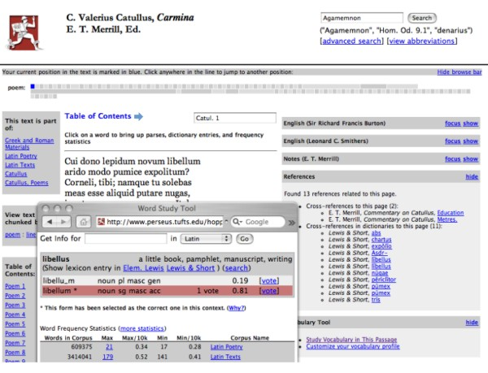

|
Search | Back Issues | Author Index | Title Index | Contents |

D-Lib Magazine
|
|
|
Gregory Crane |
IntroductionThe Greek historian Herodotus has the Athenian sage Solon estimate the lifetime of a human being at c. 26,250 days (Herodotus, The Histories, 1.32). If we could read a book on each of those days, it would take almost forty lifetimes to work through every volume in a single million book library. The continuous tradition of written European literature that began with the Iliad and Odyssey in the eighth century BCE is itself little more than a million days old. While libraries that contain more than one million items are not unusual, print libraries never possessed a million books of use to any one reader. The great libraries that took shape in the nineteenth and twentieth centuries were meta-structures, whose catalogues and finding aids allowed readers to create their own customized collections, building on the fixed classification schemes and disciplinary structures that took shape in the nineteenth century. The digital libraries of the early twenty-first century can be searched and their contents transmitted around the world. They can contain time-based media, images, quantitative data, and a far richer array of content than print, with visualization technologies blurring the boundaries between library and museum. But our digital libraries remain filled with digital incunabula – digital objects whose form remains firmly rooted in traditions of print, with HTML and PDF largely mimicking the limitations of their print predecessors. Vast collections based on image books – raw digital pictures of books with searchable but uncorrected text from OCR – could arguably retard our long-term progress, reinforcing the hegemony of structures that evolved to minimize the challenges of a world where paper was the only medium of distribution and where humans alone could read.1 Already the books in a digital library are beginning to read one another and to confer among themselves before creating a new synthetic document for review by their human readers.2  Figure 1 shows a simple illustration of recombinant documents. The reader has retrieved a summary of information about a canonical query – a Latin poem by the poet Catullus. Although the materials primarily derive from print sources, this view builds on three fundamental components of a truly digital library. First, they have much finer and more meaningful granularity than page breaks: larger documents have been broken down into smaller units aligned to an established authority (in this case, the traditional numbering and lineation of the poems of Catullus, such that "Catullus 1" means the same thing in many information sources). Second, the digital library automatically learns as it grows larger: automated systems scan new documents for references to Catullus; language models update themselves to provide better contextual clues to disambiguate phenomena such as morphology.3 Third, the documents can learn from their users, both implicitly (by examining patterns of use to determine important questions and sources of information) and explicitly. All three features are present in a rather primitive state in this figure, but the ability to decompose information into smaller, reusable chunks, to learn autonomously from a changing environment, and to accept explicit structured feedback from many human users in real time are fundamental characteristics that separate digital from print.4 Intelligent digital libraries can allow a greater number of users to make more effective use of a wider range of their holdings than was ever feasible in print. Traditional finding aids were much more limited in their ability to increase intellectual access; ink on paper cannot speak or search itself; print grammars and lexica cannot generate any translations – good, bad or indifferent – of text from one language to another; gazetteers cannot convert themselves into databases or display their contents on maps or timelines. The Chinese speaker from Shanghai interested in Greek literature or the English speaker from Massachusetts interested in Chinese should be able to call upon our knowledge of these subjects, converted into their own native languages and structured in ways to meet their own particular needs, whether they are professional researchers or general readers curious to expand their horizons. But if we must be wary of print-based constraints, the vast printed holdings of our libraries provide the raw material out of which pathways of intellectual life will evolve. We are beginning to see the rise of vast libraries of digital books. The Million Book Project at Carnegie Mellon had as of November 2005 already scanned more than 600,000 books.5 Even more ambitiously, Google has created a consortium of libraries to build a massive digital collection: one of the partners alone – the Harvard University Library system – contains more than 15,000,000 items. Recent research by OCLC has counted the total number of unique books that will be digitized by the Google Print project at over 10.5 million.6 The Open Content Alliance is offering a more transparent framework for mass digitization, and such industry forces as Yahoo and Microsoft are beginning to develop digital collections with millions of books.7 The European Union, both optimistic about the future and fretful about too much American influence on the emerging digital infrastructure, has launched its own plans for a massive digital library.8 The money seems to be very much available to convert millions of books into digital form. Google has its own proprietary data entry environment, with the Open Content Alliance close behind and other vendors continuing to develop their offerings. Thus no serious financial or technical barriers stand in the way of the world having at its disposal a larger, more comprehensive collection than the best university library on earth – because, in fact, this collection would, if perfectly realized, subsume the Harvard Library system. Other barriers remain nonetheless, and nothing guarantees the arrival of multimillion volume digital libraries. Usage of massive digital libraries could, for example, not support the revenue needed to complete them – Google, Microsoft, Yahoo and others surely have hundreds of millions of dollars to invest in profitable endeavors, but it is far less clear that they would write off such sums to serve the public good with a comprehensive, universally accessible digital library of human knowledge. More immediately, rights holders have already begun legal action, and Google will have to fight its way through the courts to realize its vision fully. On the other hand, Google may have so dramatized the issues that Yahoo, Microsoft, and others working through the Open Content Alliance or similar consortia may find it easier to craft workable rights agreements. In the end, we should remember that copyright is an instrument to generate wealth and protect content. If Google Library or similar endeavors promise to produce more than existing mechanisms, then U.S. (and international) law will adapt, one way or the other.9 Sooner or later some form of compulsory licensing, similar to that used by radio stations which broadcast copyrighted content, will probably emerge as a reasonable solution. We can always adduce reasons why these massive libraries will not emerge, and there is no guarantee that they will emerge in the next ten years, but we also must consider the consequences not only for digital libraries but also for the intellectual life of the human race as a whole if the record of human experience becomes, in substantial measure, freely available online anytime and anywhere. On a practical level, what will happen to print collections, large or small, if large digital libraries become larger, more accessible and more flexible than any university library in history? On a broader level, we are facing a shift that may eclipse the significance of print and approach the impact of writing itself: for writing first stored human ideas outside of our brains and print enhanced the effect. Digital libraries, where books read one another in however a rudimentary fashion, have already begun to separate intelligence and action from the human brain. Changes in scale and substanceEven in their initial, inevitably crude forms, the proposed massive digital libraries differ from their predecessors by at least one or more orders of magnitude in at least five and probably six dimensions:
Thus large digital libraries promise to change at least five core dimensions of digital collections by at least one and probably more orders of magnitude. Any one of these increases would have potentially major implications. With at least five such increases, each interacting with the others, the probability becomes even larger that we confront a phase shift in how we use, support, and plan for digital collections. What do you do with a million books?The ability to extract from the stored record of humanity useful information in an actionable format for any given human being of any culture at any time and in any place will not emerge quickly, but the fundamental tools on which such a system would be built are moving forward. GALE, the most recent DARPA information technology initiative,12 has reduced the tangle of text mining, analysis, and searching technologies down to three core functions: converting analog source to text, translating one language to another, and transforming raw text into data. Three articles in this issue of D-Lib shed light on the issues involved for academic digital libraries:
How domain specialists interact with huge collectionsBefore we move on to emerging technologies, however, two other articles provide examples of forward thinking work relevant to the development of very large collections now starting to take shape. Document analysis, multilingual technology, and information extraction can be modeled in general terms, but these technologies acquire meaning when they are aligned with the needs of particular domains. Two articles in this issue of D-Lib provide case studies that address complementary efforts. Wolfgang Schibel describes collection development for a digital library on early modern culture (roughly from the first printed books through 1750). Enhanced OCR, machine translation, and information extraction promise to revolutionize the study of this historically central field in which language and cultural assumptions have rendered the primary sources virtually inaccessible to all but specialists. More interesting from our perspective, Schibel and his colleagues have shifted from digitizing documents to mining those documents for information about people, places, organizations, and various semantic fields relevant to early modern studies. This emerging knowledge base (TERMINI13) will provide the information that will in turn support improved OCR, machine translation, and information extraction. Collection development and all three of the core functions are intertwined and affect each other, with changes in any one affecting subsequent iterations of all components of the system. Dan Cohen's article describes work building on application program interfaces (APIs) to the large Web-based collections indexed by Google and Yahoo. Cohen's work anticipates what scholars can do when they build upon very large, but uneven, collections already available. His work points the way towards scholarly services and specialized experiments that will characterize research, especially in the humanities, when our research libraries make the transition to a large-scale, integrated digital form. Notes1. The card catalogue has exerted the most problematic incunabular effect upon digital libraries, with digital libraries trying to replicate card catalogues while users want content. The popularity of Google and the unfortunate demise of classification based systems such as Northernlight illustrated user impatience with catalogue-like approaches. On this topic, see Carl Lagoze, et al. "What is a Digital Library Anymore, Anyway?: Beyond Search and Access in the NSDL" D-Lib, November 2005, <doi:10.1045/november2005-lagoze>. 2. For an excellent review of the potential of synthetic documents within a universal digital library, particularly in terms of solving copyright issues, please see Michael Ian Shamos, "Machines as readers: a solution to the copyright problem." J. Zhejiang Univ. Science 6A, 11, pp. 1179-1187 (Nov. 2005). 3. For a discussion of how language models can be used to date a historical text, please see F. de Jong, et al., "Temporal Language Models for the Disclosure of Historical Text", XVIth International Conference of the Association for History and Computing, 2005. 4. These three features are well established: information retrieval systems that employ user feedback are well documented in the literature and perform all three functions: they can break text objects down into small chunks and return snippets from the whole, they analyze their corpora automatically, and they recalculate results based on user responses. Data and text mining systems combine automated analysis and user feedback to analyze more diverse data sets. Digital libraries such as the Amazon.com commercial web site relentlessly recombine their items in an attempt to create more attractive combinations of objects for their customers. More recently, the Mellon-funded Nora text mining project has begun creating an interactive text classification system that exploits the markup of TEI-conformant documents. Please see, Catherine Plaisant, et al. , "Exploring Erotics in Emily Dickinson's Correspondence with Text Mining and Visual Interfaces." <http://hcil.cs.umd.edu/trs/2006-01/2006-01.pdf>. 5. Carnegie Mellon Libraries: Million Book Project FAQ, <http://www.library.cmu.edu/Libraries/MBP_FAQ.html>. 6. Brian Lavoie, et al. "Anatomy of Aggregate Collections: The Example of Google Print for Libraries." D-Lib Magazine, September 2005, <doi:10.1045/september2005-lavoie>. 7. Open Content Alliance (OCA) home page, <http://www.opencontentalliance.org/>. 8. EU i2010: <http://europa.eu.int/information_society/eeurope/i2010/index_en.htm>. 9. For a comprehensive overview of the copyright issues faced by universal digital libraries, please see Hannibal Travis, "Building Universal Digital Libraries: An Agenda For Copyright Reform." Forthcoming, Pepperdine Law Review, available at <http://papers.ssrn.com/sol3/papers.cfm?abstract_id=793585>. 10. The Michigan Home page for the Making of America (last change November 15, 2005), <http://www.hti.umich.edu/m/moagrp/>, claims "9,500 books and 50,000 journal articles with 19th century imprints," including 12,007 volumes in all. The Cornell Making of America (http://cdl.library.cornell.edu/moa/) claims "267 monograph volumes and over 100,000 journal articles," representing 955 serial volumes. 11. Harvard College Library, <http://hcl.harvard.edu/libraries/>. 12. DARPA Information Processing Technology Office, <http://www.darpa.mil/IPTO/solicitations/open/05-28_PIP.htm>; GALE - Global Autonomous Language Exploitation, <http://projects.ldc.upenn.edu/gale/>; Say What?: Global Autonomous Language Exploitation <http://www.military.com/soldiertech/0,14632,Soldiertech_Translator,,00.html>. 13. TERMINI, <http://www.uni-mannheim.de/mateo/termini/index.html>. Copyright © 2006 Gregory Crane |
|
| |
|
|
Top | Contents | |
| | |
|
D-Lib Magazine Access Terms and Conditions doi:10.1045/march2006-crane
|